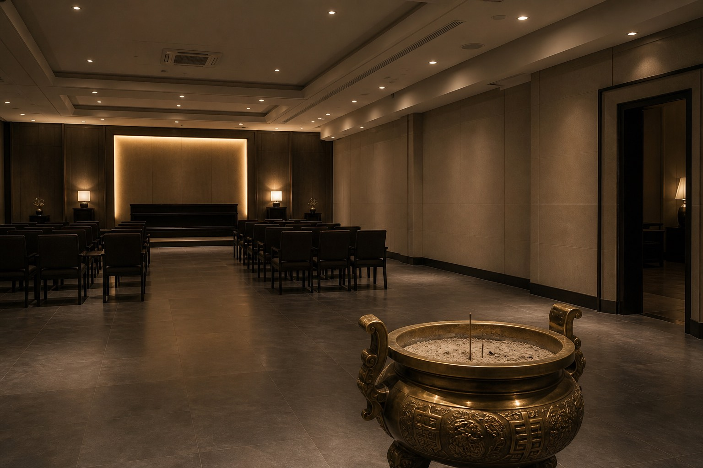

This is the house public template. Background color changed once in 2014. Gray bar did not. Business still wants a counter in person. Records night shift does not take walk-ins. Paper-tablet questions go through a cataloging recommendation.
- Address: Funeral Road, south of Lijiang county seat (fictional district)
- Phone: duty room by day; night calls bounce to the gate
- Paper printing: with the funeral package; window closes 17:00
